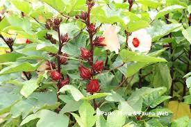

Info Tanaman Banyumanik

Rosella
Kingdom: Plantae
Divisi: Tracheophyta
Class: Magnoliopsida
Ordo: Malvales
Famili: Malvaceae
Genus: Hibiscus
Spesies: Hibiscus sabdariffa
🌱 Budidaya
- Lingkungan: Dataran rendah–tinggi (hingga 1.000 mdpl), tanah gembur, subur, pH 5,5–6,8, sinar matahari penuh, drainase baik.
- Penanaman: Jarak tanam 60 x 70 cm, bisa juga ditanam di pot besar.
- Perawatan: Siram rutin pagi dan sore, pemupukan dengan kompos dan NPK setiap 2–3 minggu, penyiangan gulma dan pengendalian hama ringan (ulat & kutu daun).
💡 Fun Fact
"Kelopaknya Jadi Teh Sehat" — Teh rosella kaya vitamin C, antioksidan, dan asam organik — bantu turunkan tekanan darah dan kolesterol.
🍃 Manfaat
- Mengandung vitamin C dan antosianin yang membantu menurunkan tekanan darah dan meningkatkan daya tahan tubuh.
- Kelopak bunga rosella dapat diolah menjadi teh herbal yang menyegarkan dan membantu detoksifikasi tubuh.
- Dapat dimanfaatkan sebagai elemen dekoratif yang estetis.